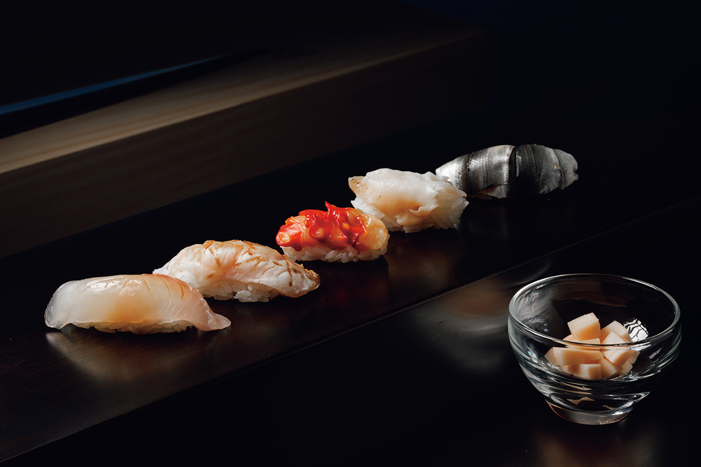
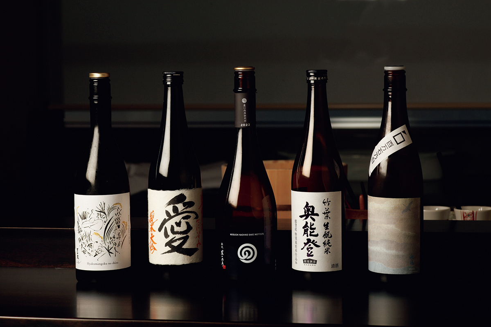
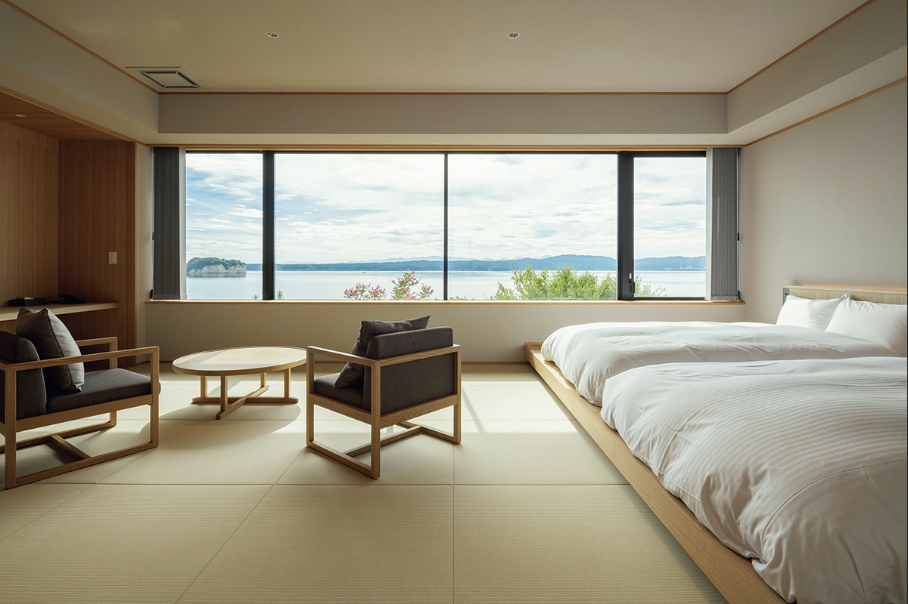
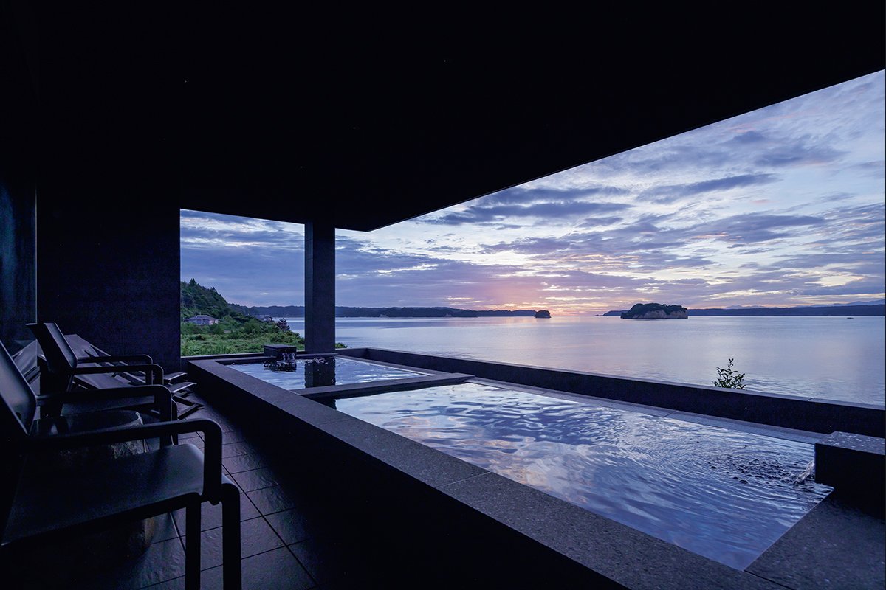

Префектура Исикава · Нанао, остров Нотодзима · где остановиться
HITOTSU NOTOJIMA: суши повара с Ното в оберже на острове посреди залива

Остров Нотодзима лежит в заливе Нанао, словно в объятиях полуострова Ното. Здесь работает HITOTSU NOTOJIMA, обержа, куда едут ради суши из местной рыбы.
Суши
Обержа, где главное блюдо суши
Остров Нотодзима лежит в заливе Нанао, и именно здесь работает первая в регионе Хокурику суши-обержа: гостиница, куда приезжают в первую очередь ради ужина.
За стойкой стоит повар родом с Ното, который хорошо знает местную природу. Он строит выверенный курс эдомаэ-суши вокруг лучших продуктов здешних гор, деревень и моря. Рыбы у берегов полуострова много и она разная, поэтому вместе с закусками и горячими блюдами в курсе около 23 подач. Среди них попадаются редкие начинки, например моллюск аканиси-гай: за пределами окрестностей залива Нанао его почти не встретишь. В сезон в меню появляются и касуго, молодой морской карась, и сакурамасу, вишнёвый лосось.

К блюдам предлагают подобранное местное сакэ, и это ещё одна причина ехать именно сюда.
Номера
Шесть комнат с видом на восход
В оберже всего шесть номеров, и из каждого видно море: за окном весь залив Нанао. Интерьер современный и аккуратный, но пол застелен татами, и в комнате легко расслабиться. Все номера смотрят на восток, так что утром из окна можно встретить рассвет.

В спа, которое бронируют целиком, стоит сауна с дровяной печью. Мягкий жар, треск поленьев и отблески огня делают этот час особенно спокойным.

HITOTSU NOTOJIMA
- Адрес
- префектура Исикава, Нанао, Нотодзима-Сусо-мати, 42-4
- Телефон
- +81 767-85-2150
- Часы работы
- ресторан 18:00–22:00, только по брони не позднее чем за 3 дня
- Цены / Вход
- ночь с ужином и завтраком от 72 600 иен с налогом и сервисом; ужин без проживания возможен, курс омакасэ от 27 500 иен
- Номера
- 6, все с видом на море